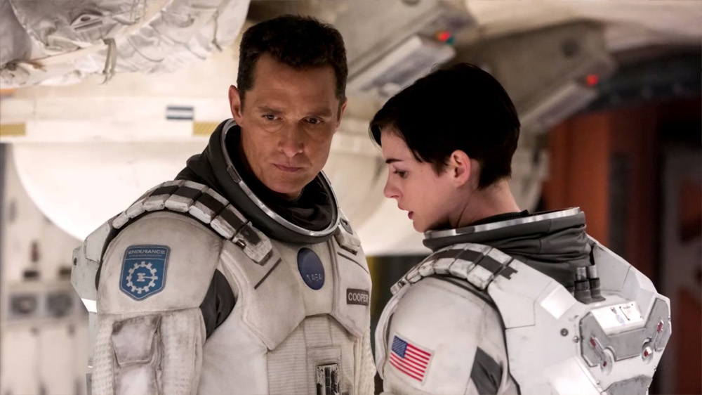

Filmagens
Nolan filmou Interstellar em película cinematográfica 35 mm e IMAX no formato anamórfico.[21] O diretor de fotografia Hoyte van Hoytema foi contratado no lugar de Wally Pfister, o cinematógrafo que trabalhou com Nolan em todos os seus filmes anteriores, já que o segundo estava trabalhando em seu primeiro filme como diretor, Transcendence.[22] Interstellar teve mais cenas rodadas em IMAX que qualquer um dos filmes anteriores de Nolan. Locações práticas foram construídas para minimizar o uso de imagens geradas por computação gráfica, como por exemplo o interior da Endurance.
Volte para a primeira página aqui!!!
Confira aqui o Trailer de Interstellar!!!